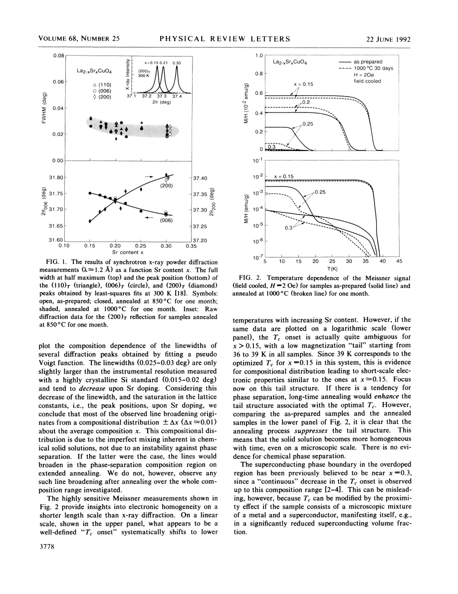
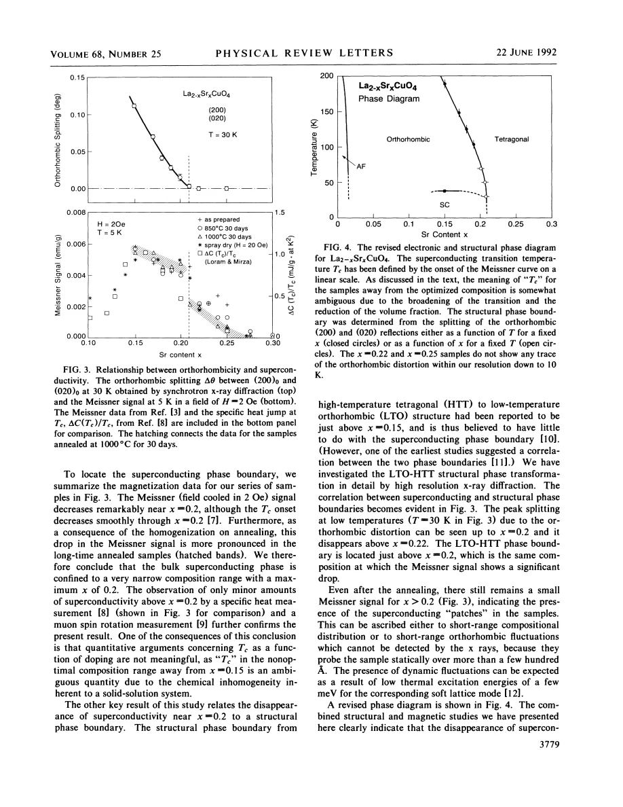

experiment · Takagi · supplied source 1992
Disappearance of superconductivity in overdoped La2-xSrxCuO4 at a structural phase boundary
Extended annealing linked reduced Meissner response and loss of orthorhombicity near x = 0.20 in this historical ceramic series; the boundary is not a universal LSCO endpoint.
The question: Does the loss of superconducting response in heavily doped LSCO coincide with a structural change?
Before you start: the few terms you need
- Bulk Meissner response: a small onset and a large superconducting fraction are different observations
- Diffraction: average lattice symmetry and peak width do not directly image every local environment
See → explain → test
Understand it in four pictures.
Picture 1 / 4
Test chemical stability
Look for: A month-long anneal tests whether diffraction peaks split or broaden into distinct compositions.
Swipe across the picture to read every label, or enlarge it below.
- Long annealing
- Diffraction linewidth comparison
- Assess chemical mixing
Teaching schematic. Average diffraction cannot exclude every nanoscale electronic heterogeneity.
Improved uniformity argues against chemical phase separation in the tested series.
Picture 2 / 4
Separate onset from magnitude
Look for: A tiny high-temperature Meissner tail persists even when the bulk response is small.
Swipe across the picture to read every label, or enlarge it below.
- Tc onset
- Meissner magnitude
Teaching schematic. Neither signal is automatically a perfectly calibrated volume fraction.
An onset alone can overstate the extent of superconductivity.
Check the original: PDF p. 2
Picture 3 / 4
Compare two independent probes
Look for: Orthorhombic peak splitting and low-temperature Meissner response both decrease near x = 0.20.
Swipe across the picture to read every label, or enlarge it below.
- Splitting and response decrease
- Shared composition boundary
- Local structure proposed
Teaching schematic. Specific to the supplied 1992 samples and analysis.
The correlation motivates a structural role but does not establish causation.
Check the original: PDF p. 3
Picture 4 / 4
Keep the historical disagreement
Look for: Other supplied LSCO sources retain superconductivity above x = 0.20.
Swipe across the picture to read every label, or enlarge it below.
- This annealed ceramic series
- Other supplied LSCO studies
Teaching schematic. This comparison preserves conflicting evidence rather than replacing it with a single schematic dome.
Sample preparation and the definition of bulk superconductivity must accompany the boundary claim.
Predict before revealing
A sample has a tiny magnetic onset near 38 K but a very small low-temperature Meissner signal. What does the onset alone establish?
Choose an answer, then compare the reasoning.
An onset is sensitive to small fractions and does not establish bulk response or a chemical segregation mechanism.
Read the answer
A detectable superconducting response begins An onset is sensitive to small fractions and does not establish bulk response or a chemical segregation mechanism.
Go deeper Follow the full argument
The problem the authors reexamined
Takagi and colleagues investigate x = 0.15 to 0.30 because earlier diagrams showed a gradual superconducting endpoint near x = 0.30 and some studies suggested chemical phase separation. They combine synchrotron powder diffraction with low-field Meissner measurements on ceramic pellets. A distinguishing procedure is annealing separate sample sets for one month, 720 hours, at 850 or 1000 degrees Celsius, followed by slow cooling for oxygen uptake. Prolonged annealing should favor detectable segregation if a chemical miscibility gap exists and cations can diffuse. Their oxygen analysis gives about 3.99 ± 0.02 oxygen per formula unit. The claim concerns this material preparation, not a direct controlled change of electronic doping alone.
Why the diffraction evidence disfavors chemical demixing
Room-temperature peak positions change systematically with Sr content, while their narrow widths decrease rather than broaden after prolonged annealing. The authors therefore conclude that La and Sr form a solid solution up to x = 0.30 in their investigated conditions. Residual linewidth is attributed to an ordinary distribution in composition, approximately Δx = 0.01, rather than an unstable two-phase region. This is a chemical statement at the spatial scale accessible to powder diffraction. It does not demonstrate that the low-temperature charge, spin or superconducting state is electronically uniform at every length scale. Distinguishing compositional segregation from an electronic distribution is particularly important when connecting this source to NMR patch models.
Why a transition onset can be misleading
On a linear magnetization scale, the apparent superconducting onset shifts smoothly to lower temperature as x increases. A logarithmic plot reveals a small tail beginning near the optimal 36 to 39 K scale even in more heavily doped samples. The tail becomes smaller after annealing, consistent with improved chemical homogeneity rather than enhanced segregation. The authors warn that a small superconducting population and proximity effects can influence an onset while the bulk magnetic response is strongly reduced. Field-cooled Meissner response and zero-field-cooled shielding are different measurements: connected superconducting paths can shield a larger apparent volume, while flux pinning affects Meissner expulsion. Their comparison should be read as evidence for differing response magnitudes, not a universally exact volume calibration.
The structural correlation in this series
At 30 K, the orthorhombic (200)/(020) splitting decreases and disappears above approximately x = 0.20 to 0.22. Low-temperature Meissner response also falls sharply near x = 0.20, more prominently after annealing. Specific-heat and muon results cited by the paper were used as supporting evidence for weak bulk superconductivity beyond that composition. The proposed revised diagram therefore ties a superconducting boundary to the LTO–HTT structural boundary. Small remaining responses could arise from compositional fluctuations or short-range orthorhombic fluctuations invisible to average diffraction. These are alternative interpretations. The coincidence of two composition trends alone does not show that orthorhombicity causes pairing, and the source itself discusses tetragonal superconducting cuprates as exceptions to a simple symmetry rule.
How to use the conclusion in this library
The paper’s strong statement that bulk superconductivity ends near x = 0.20 must remain explicitly historical and sample dependent. The supplied nuclear, thermodynamic and neutron papers report superconducting behavior at x = 0.22, 0.24 or 0.25, and the later ARPES study observes a d-wave gap through a Fermi-surface topology change near x = 0.21. These observations prevent promoting the 1992 ceramic boundary to a universal current LSCO endpoint. The reusable lesson is methodological: compare response magnitude, onset definition, sample homogeneity and local versus average structure before drawing a phase boundary. This source motivates local structural studies but does not uniquely establish structural coexistence, superconducting patches or the microscopic destruction mechanism.
How to compare the evidence
The same magnetization data look different on linear and logarithmic axes because the latter reveals a very small high-temperature tail. A trace of optimally doped superconducting regions can produce an onset near the optimal Tc even when most of the nominally overdoped sample has much weaker response. Extended annealing suppresses that tail in this study, favoring improved compositional homogeneity over an instability that would enhance chemical segregation. This reasoning still concerns detection sensitivity and the particular preparation. It cannot establish the superconducting endpoint for every later LSCO crystal or film. Likewise, coincident loss of orthorhombic splitting and a bulk superconducting signal is a correlation in this series; local distortions and superconductivity in other cuprate structures require separate experimental evidence.
Translate the mathematics Key equations and symbol meanings
Δ2θ = 2θ(200) − 2θ(020)
Symbols: 2θ: diffraction angle; Δ2θ: orthorhombic splitting of the two reflections.
Vanishing resolvable splitting indicates average tetragonal symmetry at the measurement resolution, not absence of every local distortion.
Tc(onset) ≠ a direct measure of superconducting fraction
Symbols: Tc(onset): earliest detected magnetic transition; fraction: amount of superconducting response.
A small high-Tc tail can coexist with a weak bulk signal; this is a conceptual inequality rather than a constitutive equation.
Read the evidence A guided look at the original figures

Open the full original page ↗

Open the full original page ↗
Open the full original page ↗
What this paper does—and does not—establish
- The source’s proposed x ≈ 0.20 bulk boundary is sample-dependent historical evidence.
- Meissner and shielding magnitudes are affected by pinning, connectivity and geometry.
- Average diffraction cannot determine all local or dynamic structural fluctuations.
Explain it back.
Try answering aloud before opening the explanation.
Does a single diffraction phase prove uniform electronic behavior?
No. Chemical phase purity and electronic homogeneity are different questions at different scales.
Does tetragonal symmetry prohibit superconductivity?
No. The source discusses exceptions, and other supplied LSCO samples show superconductivity beyond its proposed boundary.
What was the purpose of month-long annealing?
To test whether phase segregation grows or composition becomes more uniform when diffusion has much longer to act.
Connect the next paper.
Source version, reading coverage and preservation
Complete supplied substantive text read; selected main figure and equation pages rendered and visually checked
Reviewed body pages: 1, 2, 3, 4. References checked as a bibliography but cited works were not independently re-read.
Original file retained byte for byte. SHA-256: f359e69c57193c201986eb58b178bf960cff8c7ef15dcbb9ec57266e02b74172
Filename: PRL - Takagi - Superconductivity and structural boundary in overdoped LSCO - 1992.pdf.